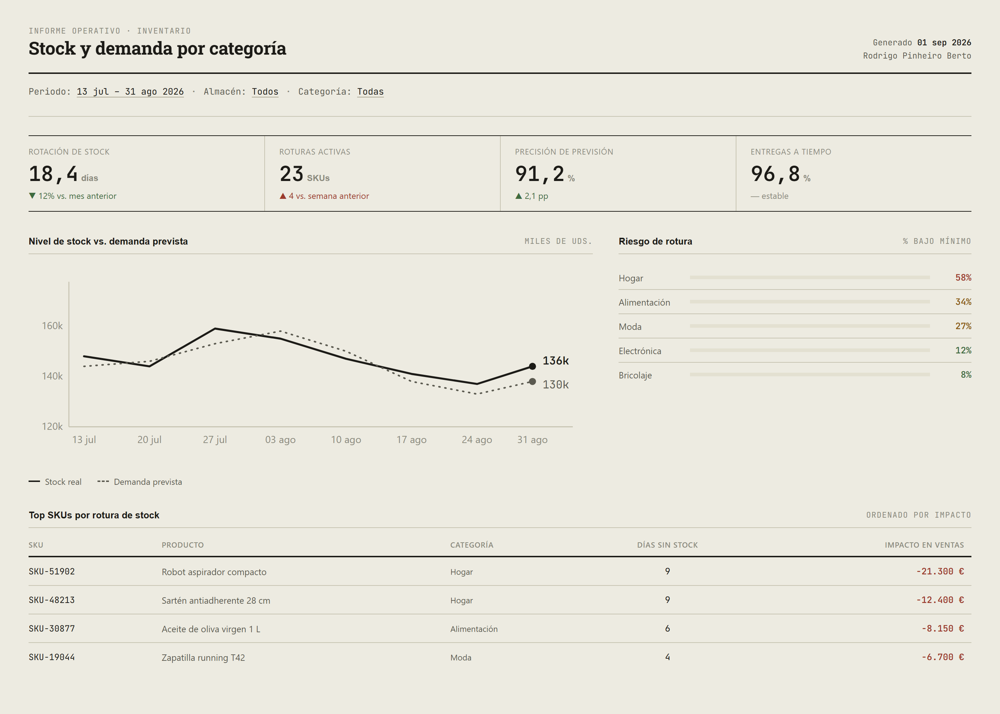
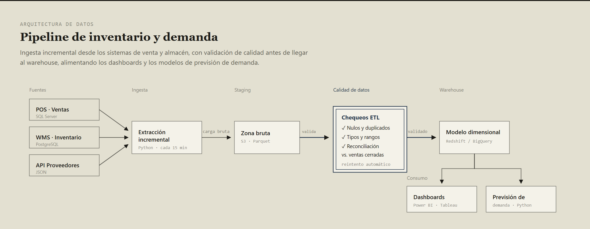

Casos de trabajo con SQL, ETL, Power BI y modelado de datos, construidos a partir de mi experiencia real en Falavinha Next, Renault Group, Hecke Import y UNINTER. Uso datos sintéticos donde no puedo compartir información de clientes reales — cada caso lo aclara en su pie de página.
Cada caso incluye el enfoque técnico detrás del resultado visual — no solo la imagen final.
Dashboard interactivo de banca/crédito con filtro por región, modelo en estrella y medidas DAX — SUM, CALCULATE, DIVIDE, SAMEPERIODLASTYEAR.
Ranking de vendedores con barras de progreso y medidas de inteligencia de tiempo — TOTALYTD, SAMEPERIODLASTYEAR.
Consulta de Power Query que limpia y combina archivos de sucursales con formatos inconsistentes en una tabla única, con el código M detrás.
Diagnóstico con el analizador de rendimiento y reescritura de una medida lenta — de FILTER+ALL a RANKX+ALLSELECTED, 8.4s → 0.7s.
Estructura de plantilla premium (menú lateral fijo, KPIs grandes, panel de filtros como overlay) en vez del look plano de un informe nativo — con medidas AVERAGEX y SWITCH.
Rotación de stock, riesgo de rotura por categoría y precisión de previsión de demanda, con el pipeline ETL que lo alimenta.

De sistemas fuente a warehouse: ingesta incremental, staging, validación y cola de reintentos para lo que falla.
